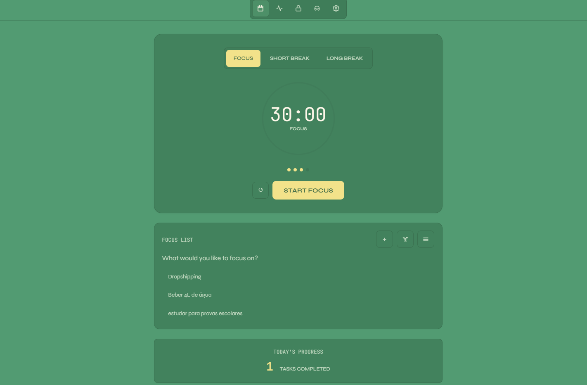
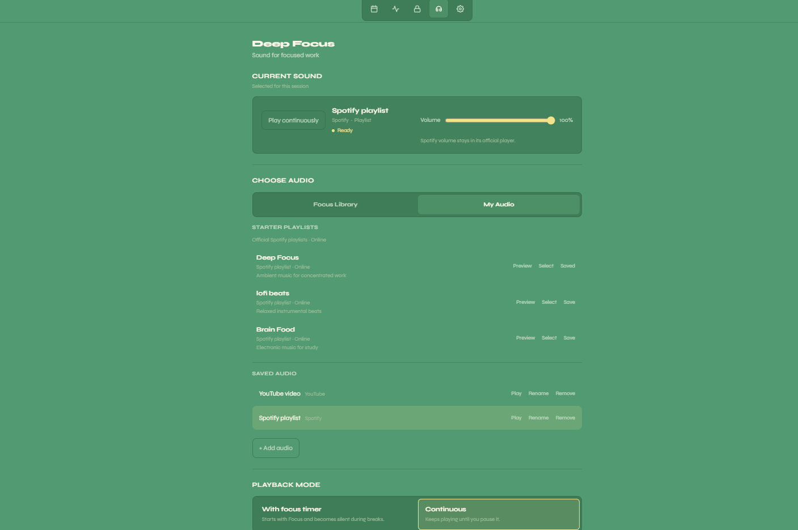
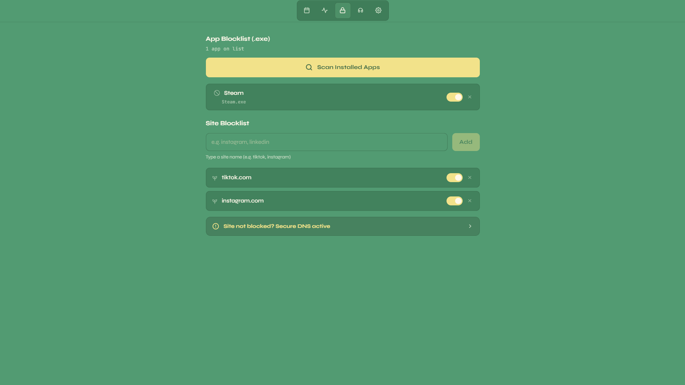
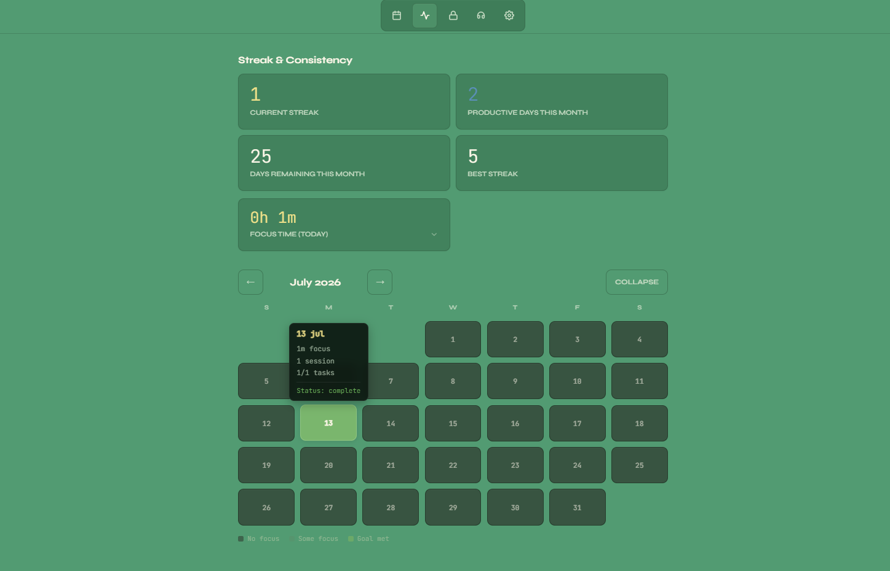
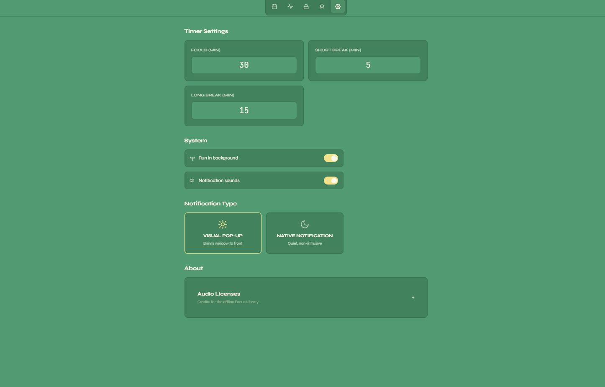
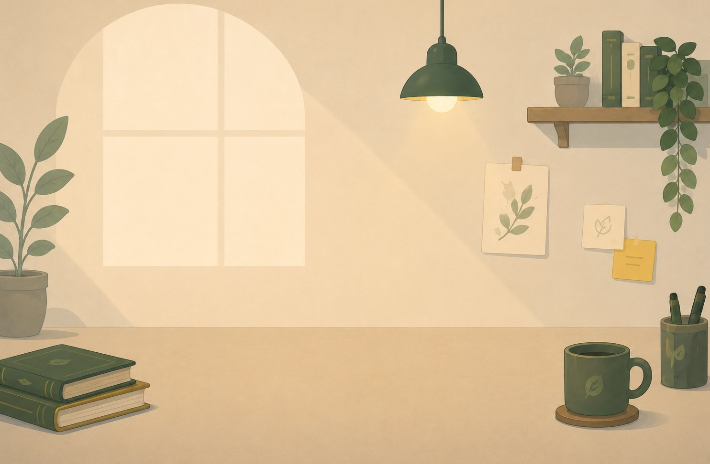

01 · CHOOSE
Choose
Pick the task you want in front of you.
Sylviae brings your focus timer, tasks, distraction blocking, music, and calendar tools into one quiet Windows app.

No complex setup. Pick a task, start a session, and let the desktop hold the boundary.
01 · CHOOSE
Pick the task you want in front of you.
02 · FOCUS
Start a configurable focus session.
03 · PROTECT
Keep selected sites and applications out of reach.
04 · CONTINUE
Return with your progress and setup still ready.
Choose offline focus music, or use Spotify and YouTube sources. Audio can follow the focus timer, become silent during breaks, or keep playing continuously.
Focus tracks available without an internet connection.
Use supported external audio sources directly inside Sylviae.
Audio can follow Focus and pause during breaks, or keep playing continuously.


Choose the sites and applications you want out of the way. When Focus begins, Sylviae enforces the boundary directly on Windows.
Selected domains stay out of reach while a session runs.
Prevent distracting desktop programs from running during focus.
Open browser tabs matching your block list are closed automatically.
Sylviae blocks distracting sites and apps directly on Windows, not just in one browser tab — so switching tabs or apps doesn't get you around it. Windows may ask for a one-time permission on first launch so Sylviae can actually enforce the block.
Import tasks and scheduled events from tools you already use, then choose what belongs in your next session.

Import upcoming calendar events into your focus list.
Import supported Notion tasks and sync completion back to Notion.
Import tasks from selected Todoist projects.
Create and manage local focus tasks alongside imports.
Close the window without losing the room you set up. Sylviae keeps running quietly in the system tray and remembers where you left off.
Sylviae stays available from the Windows system tray while you work in other apps.
Tasks, audio choice, timer settings, and preferences remain ready for the next session.
Opening Sylviae again brings you back to the same session — no conflicting duplicate windows.

Most desktop focus setups stitch a timer, a blocker, a music app, and a task list together. Sylviae does the whole loop in one calm Windows workspace.
| Capability | Sylviae | Forest / Pomofocus | Cold Turkey / Freedom | Endel / Brain.fm | Todoist / Notion |
|---|---|---|---|---|---|
| Focus timer accurate through PC sleep | ✓ | ✓ | — | — | — |
| Blocks websites and desktop apps | ✓ | — | ✓ | — | — |
| Offline focus audio built in | ✓ | ~ | — | ~ | — |
| Spotify & YouTube inside the session | ✓ | — | — | — | — |
| Import Google Calendar, Notion & Todoist | ✓ | — | — | — | ~ |
| Runs locally, no account required | ✓ | — | ~ | — | — |
| Free during beta | ✓ | ~ | ~ | $ | ~ |
✓ full · ~ partial or requires add-on · — not supported · Comparison reflects each app's default desktop client at the time of writing.
Feedback from people using early versions of Sylviae. Two stories in full below, plus the shorter reactions from the wider beta group.
"Before Sylviae, I kept switching between my timer, music, and task list. Now I open one place and begin."
"Offline soundscapes and a timer that stays accurate when my PC sleeps make focus sessions feel seamless."
"I pull my daily calendar events straight into my focus list without juggling multiple task apps."
"Google Calendar imports and Notion sync save me 30 minutes every morning."
"Spotify focus tracks synced with my Pomodoro timers make long design sprints effortless."
"Jupyter notebook sessions stay uninterrupted with local app process blocking. The tray widget is calm."
"The zero-drift timer stays accurate across laptop sleep during long reading blocks. Small detail, huge trust."
"Hosts-file DNS blocker stops impulsive YouTube feed checks while video exports render in the background."
Names lightly changed at testers' request. Feedback comes from early Sylviae beta users, edited only for grammar.
Sylviae's core timer, tasks, history, blocker preferences, and offline tracks stay on your device. Connected services are contacted only when you choose to use them.
LOCAL BY DEFAULT
Core timer, tasks, history, blocker preferences, and offline tracks stay on your device.
PROTECTED CONNECTIONS
Connected-service credentials use protected storage and encrypted handling.
NO ADVERTISING MODEL
Sylviae is not built around advertising or selling user attention.
Your tasks and session history are saved in a local file on your own device, not in the cloud. If you connect Notion, Todoist, or Google Calendar, those login details are encrypted using Windows' own built-in secure storage — the same protection Windows uses for your other saved passwords.
Your normal workspace stays clean, functional, and yours. Step into Focus Mode and a short yellow portal carries you into one calm illustrated space — Sylviae is already there, working quietly alongside you while the timer stays in charge.
The same calm illustrated room every session — nothing new to load, nothing to pull focus from the timer.
Resting, reading, or just quietly nearby — soft, loop-based motion that never asks for attention.

Download the local Windows installer and run a real focus block — no account needed.
File: toki-setup-1.0.0.exe · No account required
Sylviae is a calm Windows desktop focus workspace that combines your timer, tasks, distraction blocking, focus audio, and calendar integrations into one quiet application.
No. Sylviae brings together a focus timer, task context, distraction controls, ambient audio, and task imports so you can enter work without switching apps.
Yes. The core timer, distraction blocker, local task list, and built-in ambient soundscapes work offline. Internet connection is required for cloud task imports or streaming audio.
No account is required to download Sylviae or use its core features. Integration credentials for Google Calendar, Notion, and Todoist are stored locally using Windows secure storage.
Sylviae is currently built for Windows 64-bit desktop systems.
Blocking a website only works if it's enforced by Windows itself, not just inside your browser. That's why Sylviae asks for a one-time system permission — the same kind of prompt you'd see installing any app that manages your network or firewall.
Yes. The current Windows beta is 100% free to download and use with no account creation.
Download the free beta for Windows and start your next protected focus session.